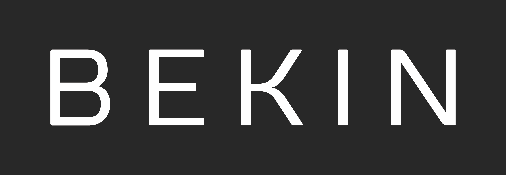
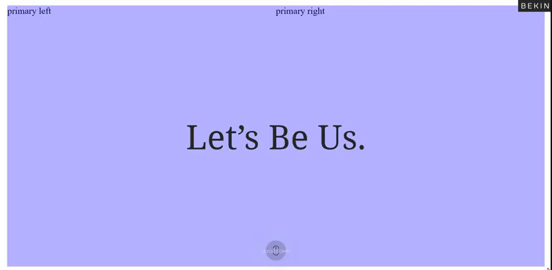
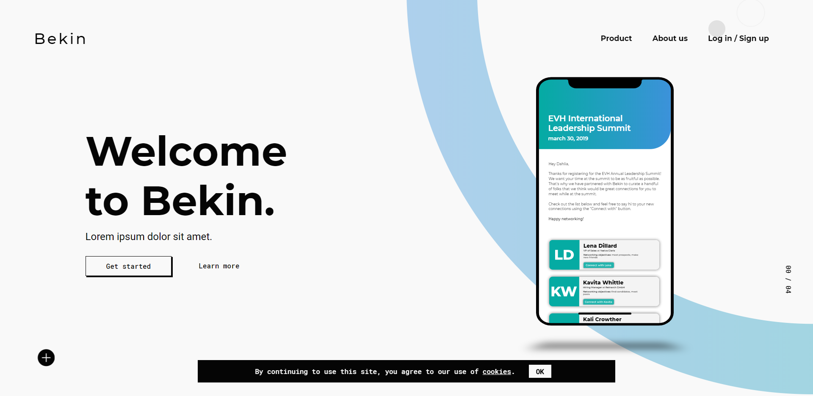
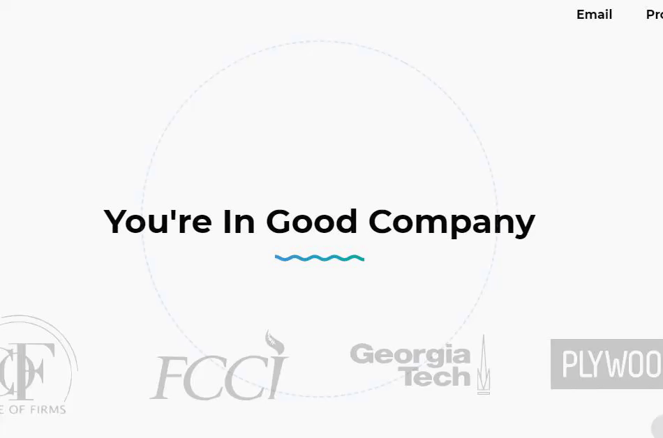
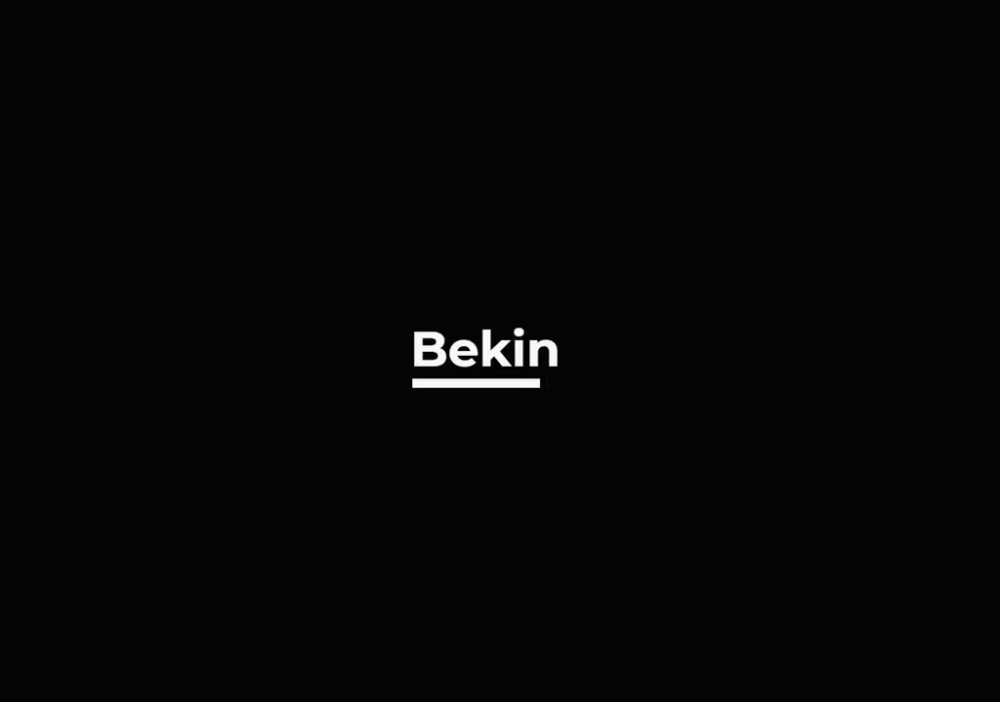

bekin - project review.
At the end of 2017, I was an art student at the savannah college of art and design. around november, one of my friends who had recently graduated recommended me as a web designer to a new atlanta-based startup company called 'bekin'. I met with the ceo of the company and they brought me on to their small team.
overview.
bekin is a company that offers a way for event attendees to save time during networking by pre-matching them with people at the event that they might like to talk to. this is either done by email, or through a mobile app. when the company first started, we did the matching by hand and literally created cards for each attendee at an event that had information about their match(es) and we handed them out before networking began.
the bekin project ended up spanning two years. my role in the project was as the lead web developer and designer (of both websites, applications, and graphics). I learned a lot from this project — when I began, I didn't even know javascript. now, I've written everything from node.js apis, to hashing algorithms. I learned php, ruby, react, mongodb, and many other technologies out of sheer necessity.
I created four landing pages for bekin over the years. I worked on their mobile application, ported that app to a web app, created internal apis, created databases, maintained web servers, developed emails, and designed almost every piece of material the company ever released, software or otherwise.
2017 - the first website.
this is the first landing page I created for bekin, back when the actual bekin product — the algorithm and api — didn't even exist. it was about as simple as it gets, but it was pretty nice.

2018 - slowly evolving.
this is when bekin had a product. as I learned more, I started to take more and more responsibility for bekin's digital identity, I started using more motion in my designs (and often went over the top):
the finished version of this iteration is completely lost, so all I have is this work in progress shot that I ripped from an old slack message.
near the end of this year was when bekin's web presence was at its most tame. it wasn't even interesting again until early 2019.
2019 - final iteration.
in 2019, I headed up the rebranding of bekin. I created their new design system, and did created the final revamp of their website. during this time, I worked with interns to create a new web application to streamline the process for event organizers who want to use bekin's services.
I was lucky to have a lot of freedom and time to experiment on this project. I created some fun little interactions:
I played with the motif of circles made up of individual dashes a lot. it sort of fits with the theme of helping people to make meaningful connections and meet other likeminded individuals.
and finally, something I made for the site that sparked my love of nice loading screens and made me want to take a deep dive into the world of loading screen design:
it works well and looks pretty sleek. even though the loading screen is typically the part of the website you spend the least amount of time on, it still doesn't hurt to make it nice.
That's about all I wanted to share about this project — this concludes my first 'case study'. next time I do this, I'll have done much more research on writing comprehensive case studies, but I do hope that this one was at least insightful. thank you for reading!
currently listening to:
- LIFE by Rude-α
- それは恋の終わり by mafumafu
- ieud by igorrr (warning - very french video)
- just dive by anamanaguchi
- 今宵は飄逸なエゴイスト ～ ego,schizoid,beat by demetori